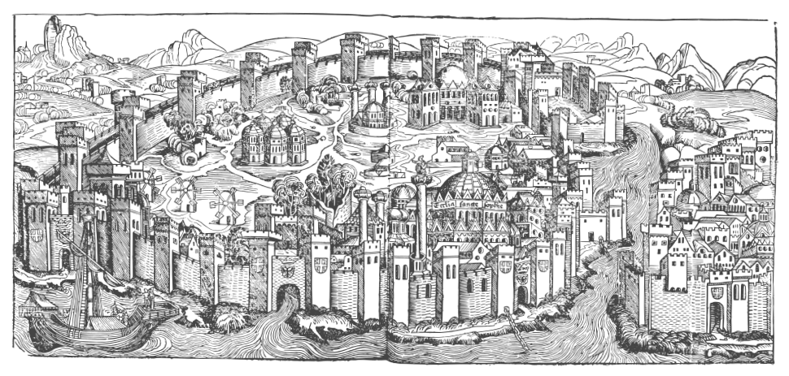
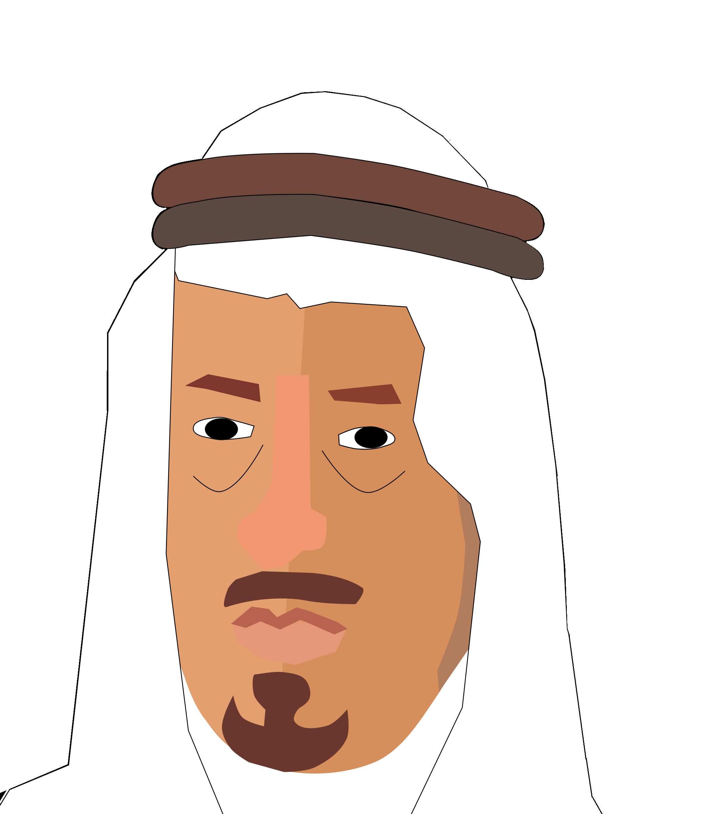

<link rel="import" href="/bower_components/polymer/polymer.html">

<dom-module id="gamification-visualization">

    <template>
        <link href="css/vis.css" rel="stylesheet">

        <nav id="gamificationNavigation">
            <a id="showTab1" on-click="showTab">Overview</a>
            <a id="showTab2" on-click="showTab">Introduction</a>
            <a id="showTab3" on-click="showTab">Badges</a>
            <a id="showTab4" on-click="showTab">Achievements</a>
            <a id="showTab5" on-click="showTab">Quests</a>
            <a id="showTab6" on-click="showTab">Leaderboard</a>
        </nav>
        <div class="gamificationTab" id="loadingInfo"><p>loading...</p></div>
        <div id="gamificationTab1"  class="gamificationTab">
            <h1>Hi <span id="gamificationUsername"></span>!</h1>
            <div><p><span id="gamificationPointUnit" class="fieldTitle">...:</span> <span id="gamificationPoints">...</span></p></div>
            <div><p><span class="fieldTitle">Level:</span> <span id="gamificationLevel">...</span> <br><span id="gamificationNextLevelInfo">...</span> </p></div>
            <div><p><span class="fieldTitle">Rank:</span> <span id="gamificationRank">...</span></p></div>
        </div>
        <div id="gamificationTab2" class="gamificationTab">
            
            <h1>Introduction</h1>
            <p>The city Trongsa has developed into a shining eastern metropolis in the past centuries. Here live 400.000 people with many different social backgrounds. The flourishing economy of the city is concentrated on the bazaar in the south district. The bazaar is not only an essential trading place but also an important social meeting point where citizens of the city meet and organize themselves<br /><br /></p>
            
            <p>The city is ruled by the governor Kasib Hamzah. He is power addicted and rules the city with strict hand. The bazaar is a thorn in the flesh. It is the only instance that keeps his power within limits.</p>
            <p>He has made many attemps to close the bazaar, but everytime he tried to cut the rights and influence of the bazaar the citizens stood together and protected this place. <br /><br /></p>
            <p>Because of this big social commitment the bazaar ist still flourishing today.</p>
        </div>
        <div id="gamificationTab3" class="gamificationTab">
            <h1>Badges</h1>
            <div id="badges">
            </div>
        </div>
        <div id="gamificationTab4" class="gamificationTab">
            <h1>Achievements</h1>
            <div id="achievements">
            </div>
        </div>
        <div id="gamificationTab5" class="gamificationTab">
            <h1>Quests</h1>
            <div id="quests">
            </div>
        </div>
        <div id="gamificationTab6" class="gamificationTab">
            <h1>Leaderboard</h1>
            <table id="leaderboard">
                <tr>
                    <th>Rank</th>
                    <th>User</th>
                    <th id="leaderboardPointUnitName"></th>
                </tr>
            </table>
        </div>
    </template>

    <!-- Reload Visualization when an action was triggered -->
    <iron-signals on-iron-signal-action-triggered="loadGamificationData"></iron-signals>
    <script src="js/gamification-visualization.js"></script>

</dom-module>